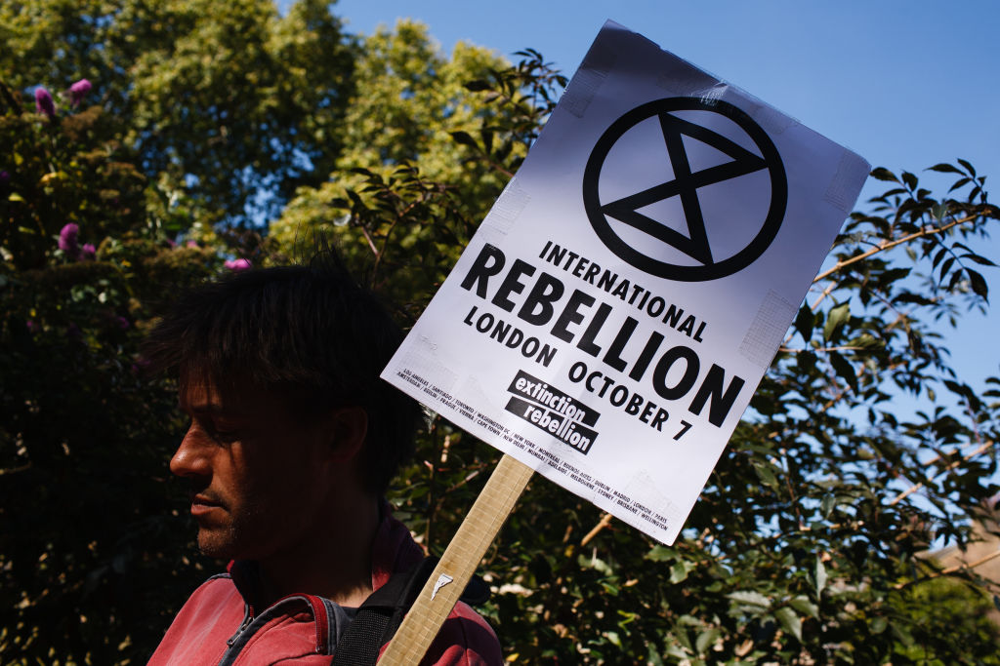
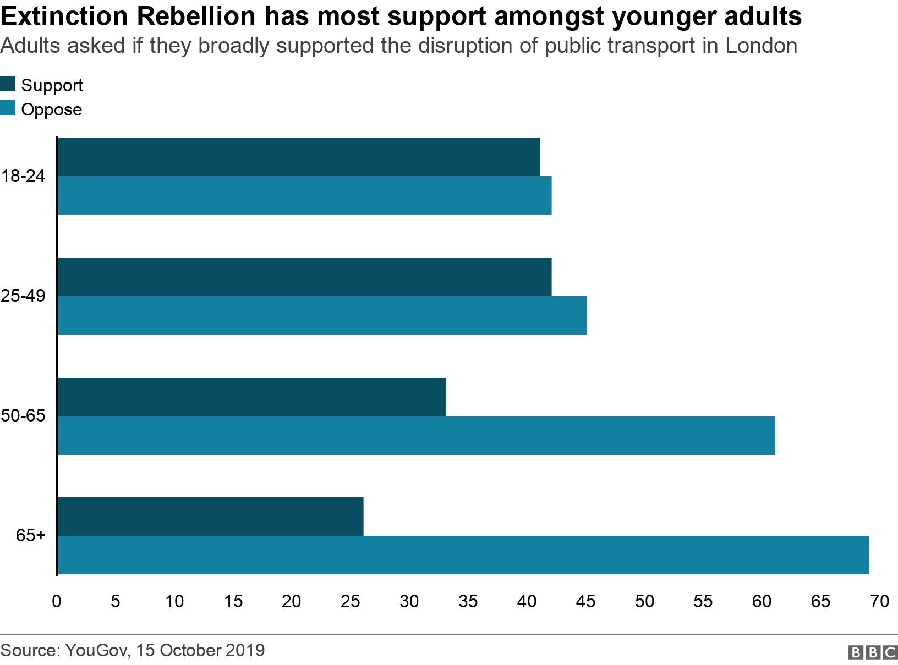

What is Extinction Rebellion and what does it want?
 Reuters
ReutersProtest group Extinction Rebellion (XR) is carrying out a week of demonstrations to highlight what it says is government inaction on climate change.
On Wednesday, some protesters glued themselves to the Department of Business, Energy and Industrial Strategy (BEIS) over the government's commitment to keep drilling for North Sea oil and gas.
Business Secretary Kwasi Kwarteng told the group via social media: "You cannot - and we won't - switch off domestic oil and gas production."
What has Extinction Rebellion said about the government's policies?
Extinction Rebellion protests this week have focused on tackling the UK's reliance on oil and other fossil fuels.
XR Scientists - the sub-group protesting at BEIS - has accused the government of "irresponsible and dangerous pursuit" of fossil fuels, which is incompatible with climate change.
The UK currently gets 80% of its energy from fossil fuels.
In April, the government published the new UK Energy Security Strategy, which included new licensing for North Sea oil and gas, and a new investigation into fracking.
What does Extinction Rebellion want?
The group describes itself as an international "non-violent civil disobedience" movement.
It says life on Earth is in crisis and facing a mass extinction. It wants governments to declare a "climate and ecological emergency" and take immediate action.
The group uses an hourglass inside a circle as its logo, to represent time running out for many species.

2025the year the group wants greenhouse emmissions to reach net zero
408,000followers on Facebook
3,672XR demonstrators arrested across the three London protests
2018year the group was founded
What are its aims?
In the UK, Extinction Rebellion has three main demands:
- The government must declare a climate "emergency"
- The UK must legally commit to reducing carbon emissions to net zero by 2025
- A citizens' assembly must be formed to "oversee the changes"
Can its aims be achieved?
Reducing CO2 emissions to almost zero in such a short period would be extremely ambitious.
Severe restrictions on flying would be needed. Diets would have to change by drastically cutting back on meat and dairy.
And there would have to be a massive increase in renewable energy, along with many other radical changes.
However, the group itself doesn't say exactly what the solutions to tackle climate change should be.
Instead, it wants the government to create a "citizens' assembly", made up of ordinary people. They would decide how to solve the climate crisis, with advice from experts.
What are its tactics?
The group often uses disruptive tactics to highlight its demands.
Across a two-week period in August and September, activists blocked Oxford Circus and erected a giant table in Covent Garden. More than 130 people locked or glued themselves to roads and buildings.
This followed previous campaigns across London, Manchester and Cardiff in 2019 and 2020.
There have also been protests in other countries:
- In Paris, activists scaled the Eiffel Tower
- Members in Germany blocked roads in Berlin

 Getty Images
Getty ImagesHow is Extinction Rebellion related to Insulate Britain?
Insulate Britain launched last autumn and called for a national programme to ensure homes are insulated to be low energy by 2030.
It is supported by some members of Extinction Rebellion and its allied networks - although the groups are not officially integrated.
Insulate Britain is a much smaller UK-specific campaigning organisation.
What have critics said about the groups?
Many of those directly affected by protests have objected to the tactics used by both Insulate Britain and Extinction Rebellion.
Prime Minister Boris Johnson has accused both groups of being "crusties" who block the streets and cause disruption.
Green Party co-leader Carla Denyer said while there was a place for direct action, Insulate Britain was "not necessarily always doing it in the most constructive way".
But District Judge Stephen Leake who fined some Insulate Britain protesters for blocking the M25 motorway, said he was "inspired" by their climate concerns.
Who supports Extinction Rebellion?
Younger people are most likely to agree with its aims, according to a survey of more than 3,000 people carried out after the London 2019 protests.
Among 18 to 24-year-olds, 41% either "strongly supported" or "somewhat supported" the disruption of traffic and public transport in London to highlight Extinction Rebellion's aims.
That compared with 33% of those aged 50-65, and 26% of over-65s.
